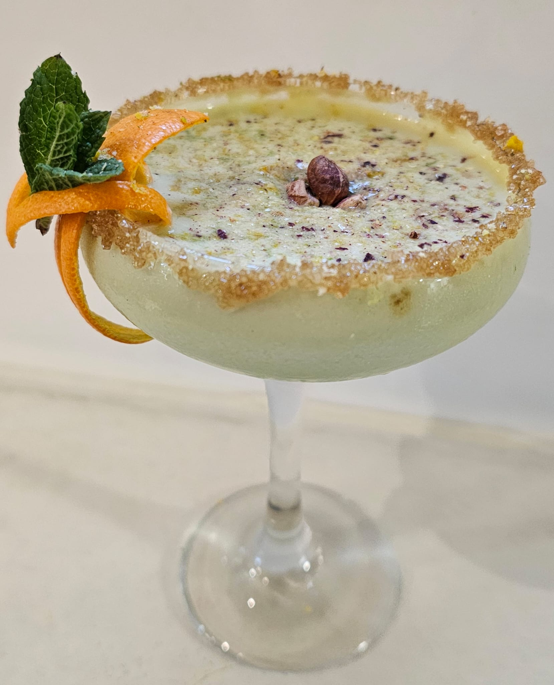

Mallorca tiene una luz particular que lo transforma todo. Al atardecer, la Serra de Tramuntana adopta un verde profundo que se funde con el oro del sol poniente.
Ese instante fue el punto de partida. El pistacho no es solo un ingrediente; es el color de la isla cuando la luz llega de lado. Un verde vivo, orgánico, lleno de carácter.
La idea era crear algo que hablara del Mediterráneo con ingredientes inesperados, pero que en conjunto tuvieran todo el sentido del mundo.
El nombre Green Style refleja una forma de entender la coctelería: con libertad creativa, sin límites geográficos, pero con raíces claras.
El maracuyá y el coco traen el trópico. La lima y el pistacho anclan el cóctel al Mediterráneo. El resultado es un diálogo entre dos mundos que se complementan a la perfección.
Seis ingredientes, ninguno al azar.
El primer sorbo es cremoso y envolvente, con el pistacho como protagonista. Después llega el maracuyá, fresco y ligeramente ácido. El coco redondea el conjunto, y la lima aporta el equilibrio final.
Complejo sin resultar pesado. Tropical sin perder elegancia.
Bordear la copa con azúcar moreno. El primer contacto ya define el carácter del cóctel.
Incorporar todos los ingredientes a la coctelera con tres cubitos de hielo.
Agitar enérgicamente durante 15 segundos. Clave para la textura cremosa.
Colar y servir en la copa ya preparada.
Rallar lima, naranja y pistacho sobre la capa superior.
Una rama de hierbabuena enmarcada en un giro de naranja en el borde. Un par de pistachos enteros en el centro. La ralladura de lima, naranja y pistacho esparcida sobre la superficie.
El resultado es una copa que combina elegancia visual con una complejidad aromática que anticipa el sabor.
"Un buen cóctel se bebe dos veces: primero con los ojos, luego con la boca."
— Filosofía Green Style